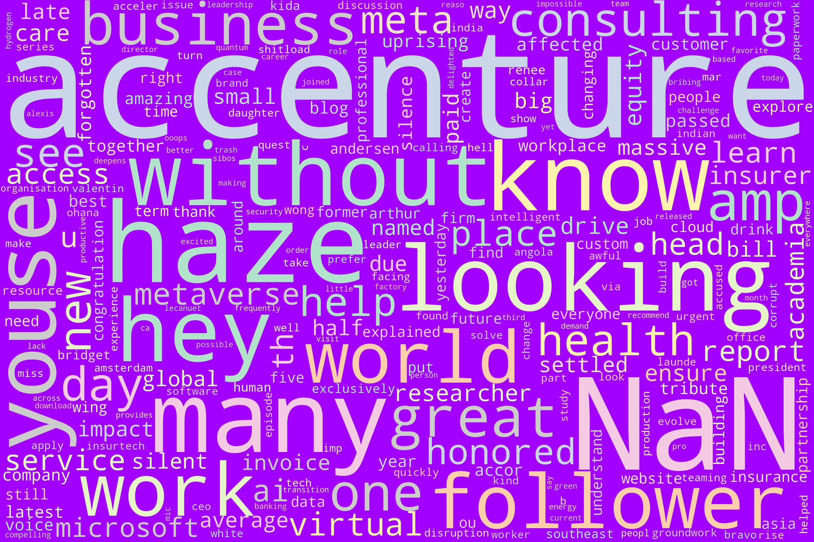
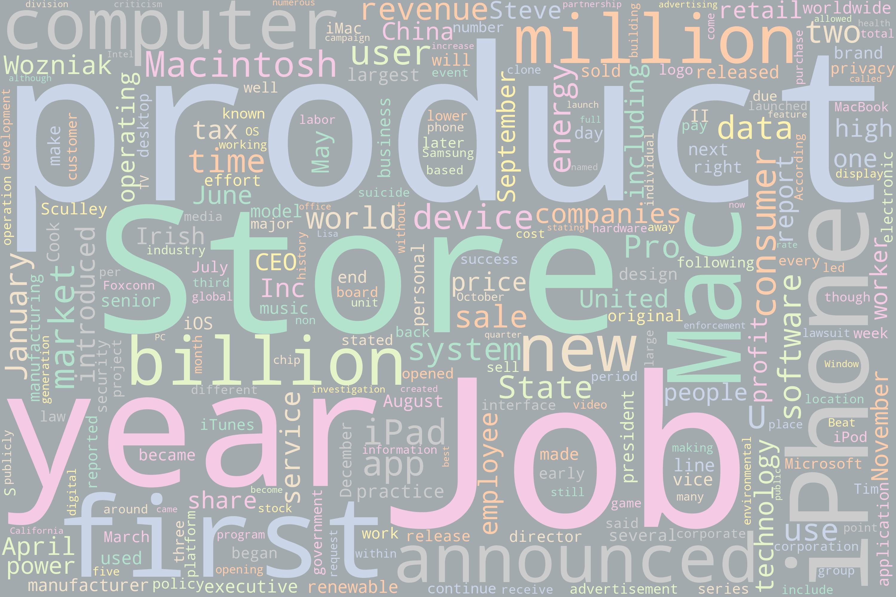
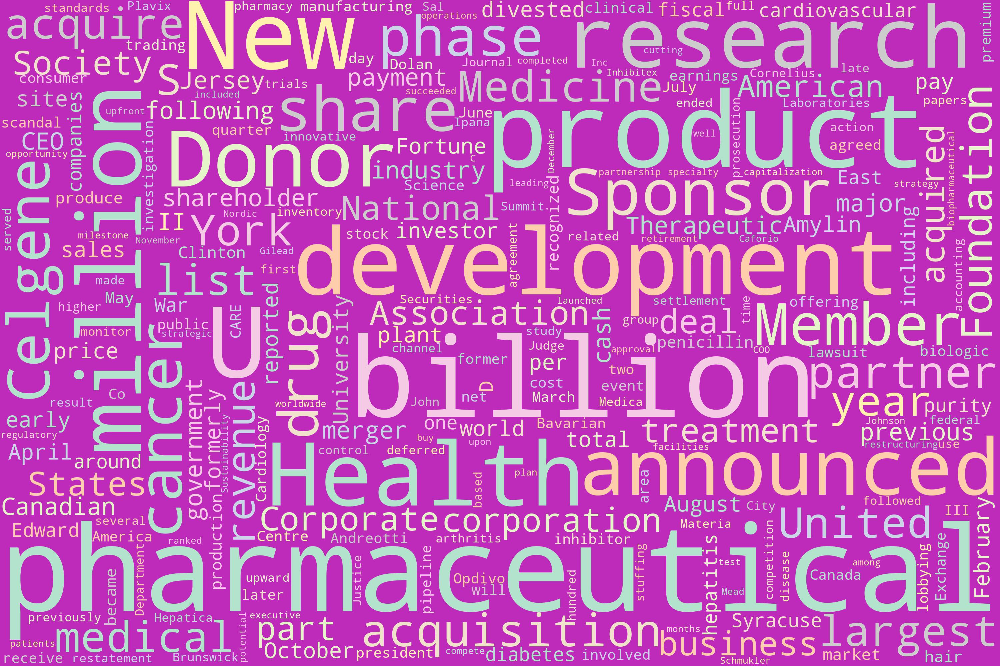
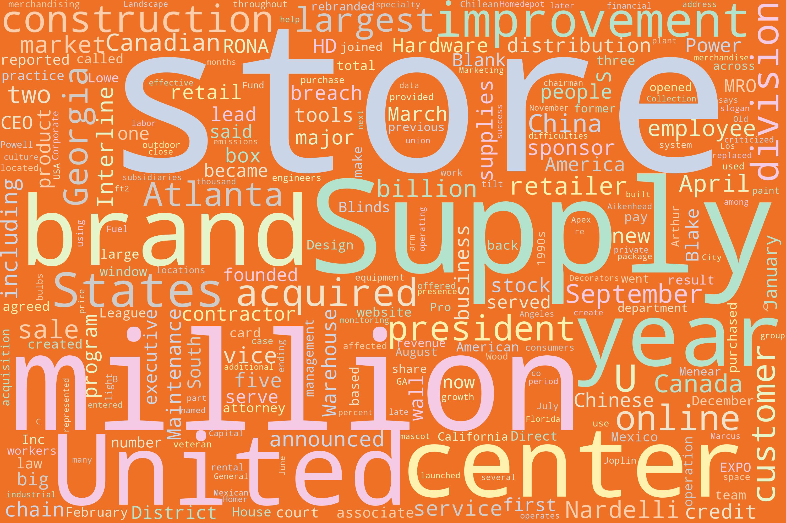
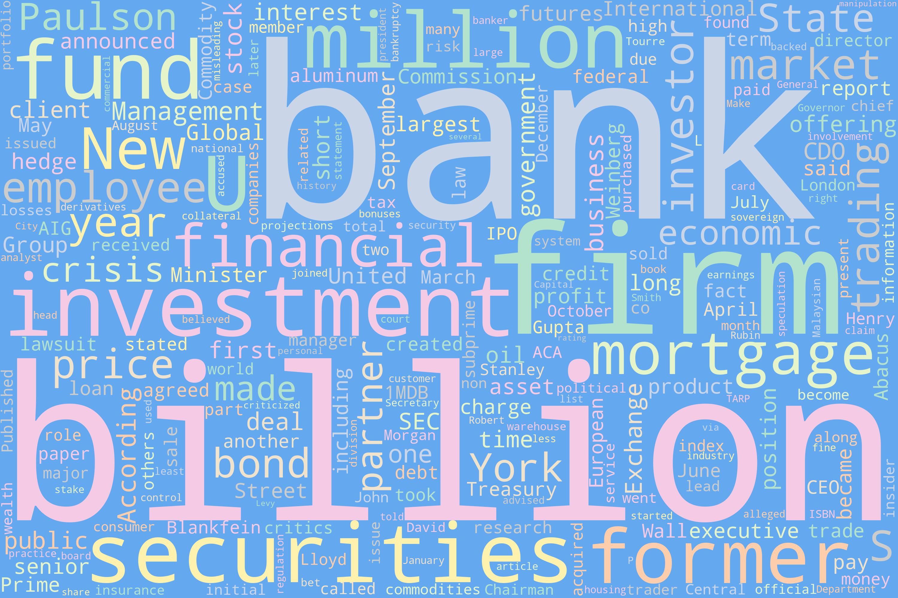
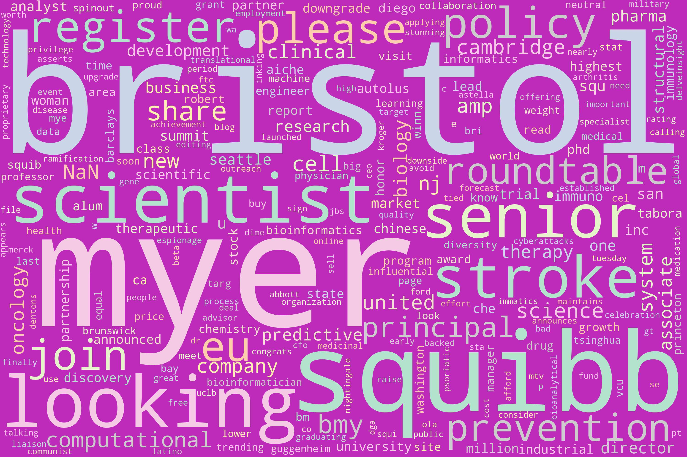
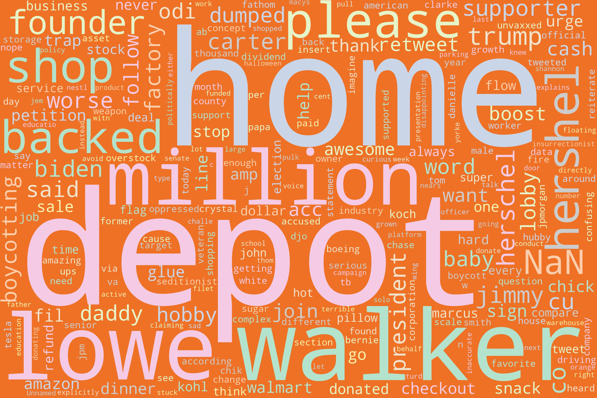
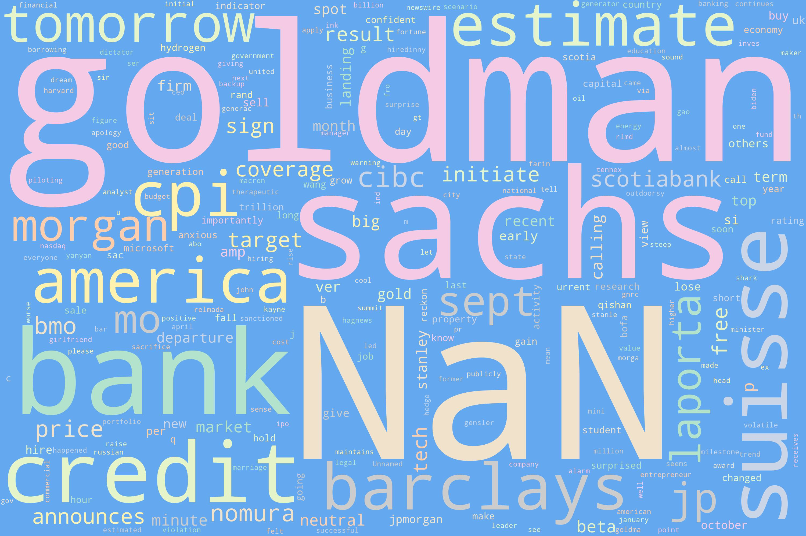

Exploring Data
Record Data Exploring (link to code)Image below shows some of the most common words on the pages. Unlike the Wikipedia wordclouds' words, which are more expected, it seems like Accenture has some more interesting words--which is reasonable since we are looking at casual text or Tweets from different people. Accenture has the word "haze", which makes me curious and want to explore this further. Goldman has the word "anxious", and I wonder if the word came up in the context of describing work environments at Goldman. I would like to explore the data further to see if I can extract more sentiment surrounding the companies.Accenture:  Wikipedia Data Exploring (link to code)I used Wikipedia API to gather Wikipedia pages of five of the companies for which I have record data--I could not locate the Wikipedia article of Databricks, so left it out. Images below show some of the most common words on the pages. Some of the most frequently occurring words are "consulting", "technology", and "service" for Accenture; "product", "store", "year", and "job" for Apple; "pharmaceutical", "health", and "donor" for BMS; "store", "supply" and "brand" for Home Depot; and "bank", "billion", and "securities", and "investment" for Goldmans Sachs. This is not a surprise as the most frequently occurring words are all related to the companies' functioning and operations. I did not expect seeing some DEI-related words like "gender" at the top left corner of Accenture's wordcloud, but these words are very infrequent. This indicates that perhaps none of these companies are known for DEI enough for it to be mentioned on their Wikipedia pages, even though these are all extremely large companies. Accenture:
Apple:  BMS:  Home Depot:  Goldman Sachs:  Tweets Data Exploring (link to code)Image below shows some of the most common words on the pages. Unlike the Wikipedia wordclouds' words, which are more expected, it seems like Accenture has some more interesting words--which is reasonable since we are looking at casual text or Tweets from different people. Accenture has the word "haze", which makes me curious and want to explore this further. Goldman has the word "anxious", and I wonder if the word came up in the context of describing work environments at Goldman. I would like to explore the data further to see if I can extract more sentiment surrounding the companies.Accenture: BMS:  Home Depot:  Goldman Sachs:  |